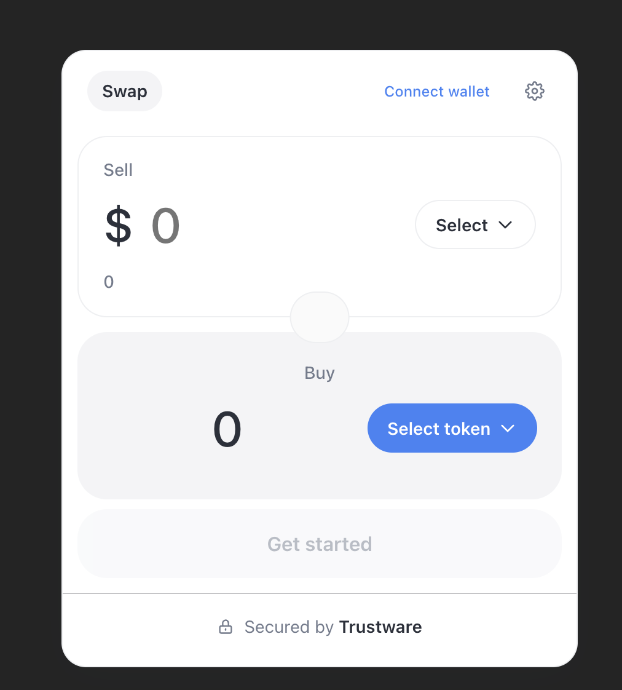

About · B.Eng Mechanical Engineering, University of Nigeria, Nsukka
End-to-end web products,
from database to UI
I'm a fullstack developer with 4+ years of commercial experience. I build React and Next.js frontends and Node.js and Go backends, backed by PostgreSQL and Redis. I've worked at a crypto payments company and integrated the OpenAI and Claude APIs into a content-generation tool. I'm at my best owning a feature from the first line of code to production.
- 01 · Compatibility
Works with what users already have
At Trustware I built the wallet-connection layer for Shillswap, supporting 7+ wallet providers on mobile and desktop.
- 02 · Confidence
Tested and monitored
My Crypto Utility Payments MVP ships with Jest and Playwright coverage, and I use Sentry to catch production errors across frontend, backend and deployment.
- 03 · Handover
Built for other people to use
I published the Trustware SDK on npm, and a third-party production app now uses it. I work in pnpm monorepos with code review.
Case study 01 · Web3 developer tooling · Trustware, a crypto payments company
One SDK for deposits,
swaps and bridging
Moving value between blockchains usually means juggling networks, wallets and bridges. I built and published a TypeScript SDK so another app can offer deposits, swaps and cross-chain bridging through a single integration.
0blockchain networks
0core actions: deposit, swap, bridge
0third-party production app using it
- 01Deposit
- 02Swap
- 03Bridge
Case study 02 · Web3 product · Trustware
Shillswap:
built from scratch
Shillswap is a Web3 app that lets people swap any token on any chain for any token on any other chain. People arrive with whatever wallet they already use, so I designed and built it in Next.js from scratch, including a wallet-connection architecture that supports 7+ providers on mobile and desktop.
- 01
7+ wallet providers
One connection layer across mobile and desktop wallets.
- 02
Built from zero
Designed and built end to end in Next.js and TypeScript.
- 03
Small, fast team
Shipped in a lean 3-person team using Git/GitHub code review and a pnpm monorepo.
More projects · 3
Other things
I've built
Crypto Utility Payments
Lets people top up airtime, buy data bundles and pay electricity and cable TV bills with their crypto wallet, with no bank account needed. A solo-built MVP with automated tests in Jest and Playwright.
Visit staging ↗AI Content Generation Tool
Generates usable content reliably through careful prompt design and structured outputs, weighing quality, latency and cost across providers.
Book-keeping dashboard & blockchain voting app
Both built from scratch, with SOLID principles for a maintainable, reusable component structure.
Experience · 2022 – 2026
Experience
Trustware.io
Full-Stack Developer · Crypto payments
Shipped production features end to end in React, Next.js and TypeScript, with Node.js/Express and Go (Gin) services, PostgreSQL and Redis, for a consumer-facing product in a lean 3-person team. Designed and built Shillswap, and built and published a TypeScript SDK covering deposits, swaps and bridging across 100+ networks.
Grandida Works
Front-End Developer (Intern)
Built a book-keeping dashboard and a blockchain voting application from scratch using React and Solidity.
Education B.Eng Mechanical Engineering · University of Nigeria, Nsukka, 2014 – 2019
Stack
Tools I ship with
Languages
- TypeScript
- JavaScript
- Go
- HTML5
- CSS3
- Solidity
Frontend
- React
- Next.js
- Tailwind CSS
- React Native
Backend
- Node.js
- Express.js
- Go (Gin)
- REST APIs
Data
- PostgreSQL
- TypeORM
- Redis
- MongoDB
AI / LLM
- OpenAI API
- Anthropic / Claude API
State management
- Redux
- Zustand
- React Context
- TanStack Query
Testing
- Jest
- Vitest
- Testing Library
- Playwright
Dev & ops
- Docker
- pnpm workspaces
- Sentry
- Git / GitHub
- CI/CD
Contact · Open to remote work worldwide
Let's build
something together
I'm open to new roles. Email is the quickest way to reach me.
oluamalachy95@gmail.com ↗ GitHub LinkedIn Résumé
© Malachy Chiagozie Olua